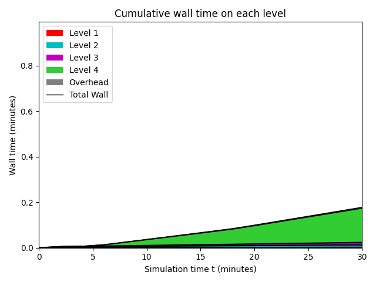

Datetime: 2020-04-05 11:28 From: /Users/rjl/clawpack_src/clawpack_master/geoclaw/examples/tsunami/eta_init_force_dry/_output
============================== Timing Data ==============================
Integration Time (stepgrid + BC + overhead)
Level Wall Time (seconds) CPU Time (seconds) Total Cell Updates
1 0.288 1.009 0.739E+06
2 0.671 2.144 0.212E+07
3 0.981 2.689 0.287E+07
4 20.717 76.362 0.885E+08
total 22.658 82.204 0.942E+08
All levels:
stepgrid 22.073 80.448
BC/ghost cells 0.546 1.710
Regridding 0.246 0.712
Output (valout) 0.082 0.061
Total time: 23.124 83.298
Using 4 thread(s)
Note: The CPU times are summed over all threads.
Total time includes more than the subroutines listed above
Note: timings are also recorded for each output step
in the file timing.csv.
clock_rate = 1000000000 per second, count_max = 9223372036854775807
clock_start = 1586111277185518000, clock_finish = 1586111300309586000
=========================================================================
